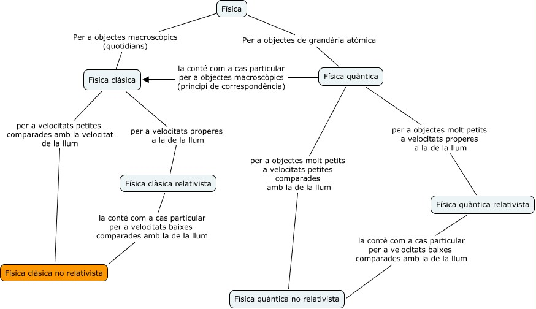

Què és la ciència?
Les ciències naturals, també anomenades ciències experimentals o directament ciéncia és el conjunt de coneixements que tracten de descriure el funcionament de la natura trobant un cert ordre i les seves causes. La ciència ès una activitat humana amb esforços col·lectius de recerca amb la finalitat de descobrir fets, establir relacions entre ells i enunciar lleis i teories demostrables que permetin una descripció senzilla sobre el funcionament de la natura.
La ciència és tan antiga com l’ésser humá. Des d’abans que l’home sàpiga escriure ja es van trobar regularitats en el clima o sobre les posicions de les estrelles entre d’altres. A partir d’aquestes regularitats s’han pogut fer prediccions i tenir un cert control sobre l’entorn.
El llenguatge de la ciència son les matemàtiques i una de les particularitats mès importants de la ciència és la mesura. L’èxit en el coneixement d’un fenomen natural està relacionat amb la possibilitat de mesurar-ho. El físic del segle XIX, Lord Kelvin, ho va dir de la següent manera: “Quan pots mesurar això del que parles, i expressar-ho en números, saps alguna cosa d’això; però quan no ho pots mesurar, quan no ho pots expressar en números, el teu coneixement es pobre i insatisfactori: pot ser el principi d’un coneixement, però els teus pensaments han avançat poc cap a l’estat de Ciència, sigui la disciplina que sigui”.
Des que les ciències naturals van incorporar les matemàtiques com a llenguatge per a expressar les seves teories, fa més o menys quatre segles, el desenvolupament científic va ser espectacular. El poder expressar les idees en termes matemàtics fa que els conceptes siguin ben concrets, sense ambigüitats. D’aquesta manera s’elimina la confusió que sempre por haver-hi quan les coses s’expliquen en llenguatge quotidià. Si les idees s’expressen matemàticament resulta més fàcil realitzar experiments que permetin confirmar o rebutjar aquestes idees.
El mètode científic
L’éxit que ha tingut la ciéncia, sobre tot, en els últims quatre-cents anys, ha estat associat a una metodologia que la caracteritza i que s’anomena el métode científic. El métode científic va ser creat, fonamentalment, pel físic italià Galileu Galilei i pel filòsof anglès Francis Bacon i consisteix en la consecució dels següents passos:
-
Observar un fenomen o situació problemàtica. Quan diem observar en ciència volem dir també mesurar les magnituds rellevants associades a aquest fenomen de manera que ens permetin enregistrar els aspectes més importants d’aixó que observem.
-
Realitzar una hipòtesi a partir de l’anàlisi del fenomen observat. Aixó vol dir trobar una relació entre les magnituds mesurades. Aquesta hipòtesi ha de tenir la propietat de poder predir resultats en situacions en les que encara no s’han fet observacions o mesuraments. Una característica important d’una hipòtesi científica és que també ha de poder predir quines conseqüències es deriven si la hipòtesi resulta falsa.
-
Fer els experiments necessaris per a comprovar si les prediccions de la hipòtesi són encertades.
-
Fer la formulació d’una regla senzilla que permeti organitzar la hipòtesi amb els efectes predits i les determinacions experimentals.
La ciència ès una disciplina humana i està associada al desenvolupament de la societat en determinat moment històric. Fets indiscutibles d’una època (com ser que la Terra roman immòbil) poden ser poden ser clarament falsos en una altre època. Això succeeix perquè quan es fa la interpretació d’una observació sempre donem per suposats moltes coses que estan associades a les creences de l’època en que vivim. Habitualment l’evolució de la ciència arriba a un punt en que s’han acumulat una quantitat important de fets observats que estan en contradicció amb les creences de l’època, aixó produeix una crisi. La crisi és superada quan s’abandonen aquestes creences i s’estableixen altres noves que permeten explicar els fets observats. Es diu que s’ha adoptat un nou paradigma. La ciència evoluciona d’aquesta manera.
La actitud científica a la vida quotidiana
Podem adoptar una actitud científica al nostre comportament quotidià encara que no siguem científics. Això vol dir tenir una actitud escèptica davant les afirmacions fetes pels altres. Què vol dir això? Senzillament que no ens hem de creure tot el que ens diuen només perquè el que fa l’afirmació es una persona important o amb més experiència. Hem de conèixer altres opinions i confrontar-les abans d’adoptar una posició. Encara que ens sembli que tenir una actitud escèptica en una societat tècnicament desenvolupada com la nostra hauria de ser el més normal, no és així. Molta gent creu sense més ni més ho que els anuncis de TV diuen o el que li recomana el seu veí. Un cas dramàtic ha estat la guerra de l’Iraq. Moltíssima gent ha donat suport a la guerra donant per veritat l’afirmació de que estava en possessió d’armes de destrucció massiva sense demanar proves. Després es va demostrar que havien estat mentides inventades per justificar una invasió amb finalitats econòmiques. La irracionalitat es molt freqüent a la nostra societat, la creença en cures miraculoses o el caure en fraus econòmics està a l’ordre del dia. El tenir una actitud escèptica ens pot ajudar a no caure en enganys.
Què estudia la física?
La física és una ciència bàsica i està en el rerefons de totes les ciències naturals ja que qualsevol fenomen natural, encara que siguin processos biològics es basen en interaccions de massa i energia que són l’objecte d’estudi de la física. Antigament la ciència era coneguda amb el nom de filosofia natural i abastava totes les ciències naturals. Després es va separar en ciències físiques (física, química, geologia i astronomia) i ciències de la vida (biologia, zoologia, botànica), que van tenir durant bastant temps objectes d’estudi ben diferenciats. Actualment s’està tornant a tenir una visió globalitzadora de la ciència i els estudis interdisciplinaris són els que estan donant més fruits en aquests moments com ser la nanotecnologia (física, química i enginyeria) i la biologia molecular (biologia, física i química).
L’objecte d’estudi de la física és fonamentalment la matèria i les radiacions, les interaccions i el moviment. En aquest curs estudiarem el moviment (cinemàtica) i les interaccions que donen origen al moviment (dinàmica). També estudiarem algunes magnituds físiques interessants que romanen invariables durant les interaccions (energia i quantitat de moviment) i que ens permetran predir comportaments de la matèria d’una manera senzilla i bella. Estudiarem una propietat física anomenada càrrega elèctrica i les seves interaccions. També estudiarem com interactuen les partícules que formen part del nucli atòmic i la nova visió de l’univers que s’ha obert a partir de les teories de la relativitat d’Einstein i la mecànica quàntica.
Dintre de la física, tenim diferents teories que resulten més adequades segons quin és el nostre sistema sota estudi. En el mapa conceptual que apareix a sota podem veure les diferents teories físiques i el seu camp d’aplicació més adequat. La major part de la fisica que estudiarem en aquest curs està indicada amb color taronja, tot i que també veurem alguns aspectes de teories de la relativitat i quàntica . Encara que pot semblar que estudiarem una part molt petita de la física és necessari dir que és aquesta part la que té aplicacions al nostre món macroscòpic i a velocitats “quotidianes”.

Perspectives de la física
“Llegará una época en la que una investigación diligente y prolongada sacará a la luz cosas que hoy están ocultas. La vida de una sola persona, aunque estuviera toda ella dedicada al cielo, sería insuficiente para investigar una materia tan vasta… Por lo tanto este conocimiento sólo se podrá desarrollar a lo largo de sucesivas edades. Llegará una época en la que nuestros descendientes se asombrarán de que ignoráramos cosas que para ellos son tan claras… Muchos son los descubrimientos reservados para las épocas futuras, cuando se haya borrado el recuerdo de nosotros. Nuestro universo sería una cosa muy limitada si no ofreciera a cada época algo que investigar… La naturaleza no revela sus misterios de una vez para siempre”. SÉNECA, Cuestiones Naturales, libro 7, siglo I
Durant el segle passat es van desenvolupar teories com la de la relativitat, la teoria quàntica, el model estàndard de partícules i la teoria estàndard del big-bang que han estat una autèntica revolució en el coneixement científic.
Probablement el punt pendent de la física és la troballa d’una teoria del tot. Una teoria que permeti englobar en un mateix formalisme totes les interaccions conegudes. Això vol dir poder trobar un teoria que permeti unificar la teoria quàntica i la teoria de la gravitació (relativitat general). Els esforços dedicats a aquesta empresa han desenvolupat una teoria encara en construcció anomenada teoria de supercordes, la hipòtesi fonamental de la qual es basa és que les entitats fonamentals que formen el món fisic no són partícules sinò cordes de dimensions $10^{20}$ vegades més petites que els àtoms. El problema que presenta aquesta teoria és que les seves prediccions encara no s’han pogut demostrar perquè la verificació experimental d’aquesta teoria necessita d’energies cada vegada més grans. Els experiments que es faran en el Gran Col·lisionador d’Hadrons LHC de Ginebra, potser ajudarà a confirmar o desmentir algunes de les prediccions d’aquesta teoria.
Altre dels problemes actuals de la física està lligat amb una qüestió de gran importància per a la humanitat com ser l’obtenció d’energia de forma sostenible. La possibilitat d’obtenir energia per fusió nuclear controlada és uns dels objectius fonamentals en aquest sentit. La construcció del reactor de fusió europeu ITER permetrà avançar en aquest camí.
En el camp de l’astrofísica s’estan fent descobriments a diari gràcies a la incorporació de noves tècniques d’observació i experimentació. Queden pendents d’explicació la matèria fosca i l’energia fosca que encara no sabem què són i que semblen ser necessaries per poder explicar l’acceleració en l’expansió de l’univers.
La superconductivitat a altes temperatures es una altre àmbit de la física que encara necessita d’una teoria que doni una explicació satisfactòria al seu mecanisme.
Altres camps prometedors són: la computació quàntica (utilització de sistemes quàntics per al càlcul i l’emmagatzematge d’informació) i la nanociència (comportament de la matèria a escala nanométrica).